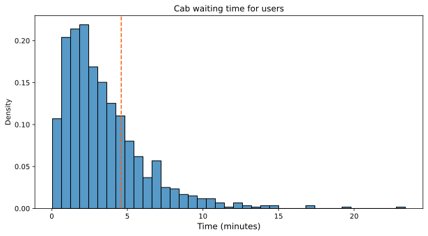
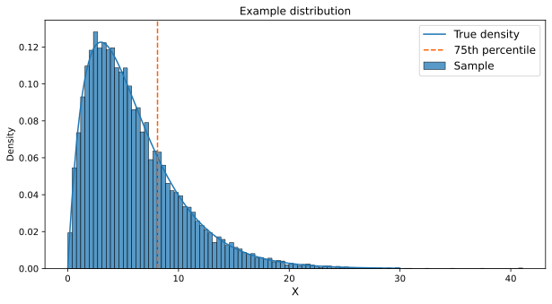
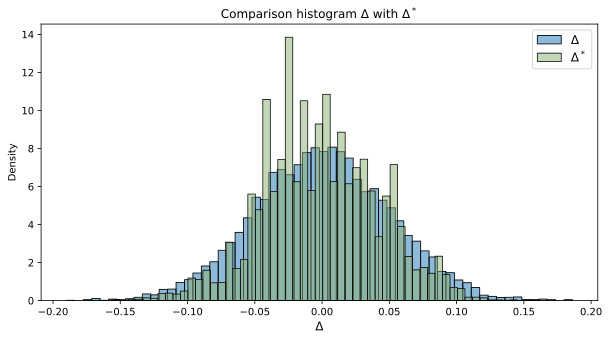
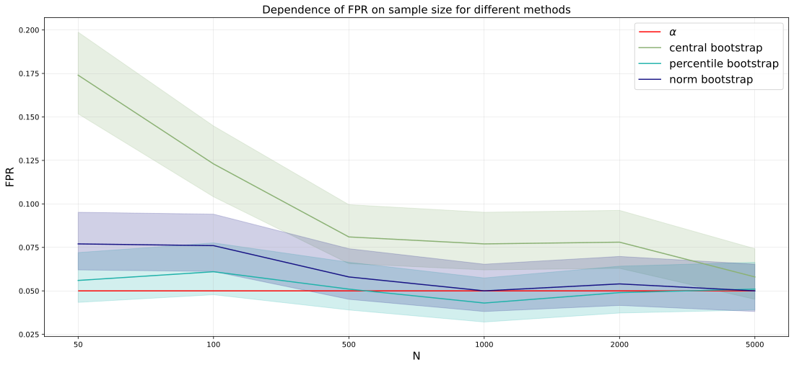

Bootstrapping
Applied Statistics
Ihor Miroshnychenko
Kyiv School of Economics
Task
You work as an analyst in a cab company. Recently, one of the company managers came to us with the idea that our application often selects a driver who is very far away from the user. And this leads to churn of users of our service.
In order to evaluate in the future how much you have improved your driver selection algorithm, you decide to use the 75th percentile of the cab waiting time distribution as the main quality metric of the algorithm. Your task now is to evaluate the current value of the metric in order to use this value as a baseline in the future.
- Let \(X\) — the sample metric of user cab wait time, \(X_{[0.75]}\) — the 75th percentile of this sample.
Sample visualization
75th percentile score: 4.596
Idea 1: Monte Carlo simulation
Let us go to a more straightforward sample, for which we already know everything: the distribution from which it is generated and the true quantile.
- Let \(\theta\) — the true value of the quantile, which we do not know. In general, it can be any characteristic: expectation, variance, etc.
- \(\widehat{\theta}\) — the obtained estimate of \(\theta\) from the sample.
\(\theta\) = 8.078, \(\widehat{\theta}\) = 8.106
Idea 1: Monte Carlo simulation (cont.)
How do I construct a confidence interval for \(\theta\)?
- To do this, I suggest the first step is to construct a distribution \(\Delta = \widehat{\theta} - \theta\).
- We sample
Btimes from our example distribution.- We consider
Bpretty large: for example, 10000. - The size of each sample is equal to \(N\), the original sample size.
- We consider
- Let’s calculate \(\widehat{\theta_i}\) in each case.
- And then subtract \(\theta\) from this value. We get
Bvalues \(\Delta_i = \widehat{\theta_i} - \theta\).
Idea 1: Monte Carlo simulation (cont.)
- Next, consider \(\alpha/2, 1 - \alpha/2\) quantiles of this distribution: \(\Delta_{[\alpha/2]}, \Delta_{[1 - \alpha/2]}\). Then by definition of quantiles \(P(\Delta_{[\alpha/2]} < \widehat{\theta} - \theta < \Delta_{[1 - \alpha/2]}) = 1 - \alpha\).
- \(P(\widehat{\theta} - \Delta_{[1 - \alpha/2]} < \theta < \widehat{\theta} - \Delta_{[\alpha/2]}) = 1 - \alpha\).
- Thus, by the definition of a confidence interval, \(CI = (\widehat{\theta} - \Delta_{[1 - \alpha/2]}, \widehat{\theta} - \Delta_{[\alpha/2]})\)
True \(\theta\) = 8.078, \(CI\) = 8.008 - 8.205
We constructed the provisional interval with the knowledge of \(\theta\) and the actual sampling distribution, but we don’t know them.
Idea 2: Empirical distribution
Let’s remember how \(\Delta:\ \Delta = \widehat{\theta} - \theta\). We used the true value of \(\theta\) and the true distribution to generate \(\widehat{\theta}\) to calculate it.
But what if we used approximations instead of the true \(\theta\) and the true distribution?
What’s good about an empirical distribution?
- Because all its characteristics are known.
- And it converges to the true distribution at infinity.
The bootstrap assumption is \(\Delta \approx \Delta^*\), where \(\Delta^*\) is the distribution of \(\widehat{\theta}^* - \widehat{\theta}\). And \(\widehat{\theta}^*\) is the estimate of \(\theta\) from the bootstrap sample.
Idea 2: Empirical distribution (cont.)
But based on our assumption, we can substitute
- \(CI = (\widehat{\theta} - \Delta_{[1 - \alpha/2]}, \widehat{\theta} - \Delta_{[\alpha/2]})\) by
- \(CI = (\widehat{\theta} - \Delta^*_{[1 - \alpha/2]}, \widehat{\theta} - \Delta^*_{[\alpha/2]})\)
Algorithm of the bootstrap method
- Calculate \(\widehat{\theta}\) from the original sample.
- In a loop of size
B:- Generate a sample with returns from the original sample. Size
N— the original sample size. This sample is called a bootstrap sample. - We count \(\theta^*_i\) on this sample in the same way as we count \(\widehat{\theta}\)$ on the original sample.
- Generate a sample with returns from the original sample. Size
- We save \(\theta^*_1,\ ...,\ \theta^*_B\) into an array.
- Construct a confidence interval:
- Count the left and right quantiles of \(\theta^*_{[\alpha/2]}, \theta^*_{[1 - \alpha/2]}\).
- \(CI = (2\widehat{\theta} - \theta^*_{[1 - \alpha/2]}, 2\widehat{\theta} - \theta^*_{[\alpha/2]})\).
Bootstrap for the cab waiting time
75th percentile score: 4.596
Bootstrap CI: (4.381226240048265, 4.866498425613839)
Two-sample bootstrap
Suppose you have a sample \(X,\ Y\) of size \(N, M\) respectively. Then:
- Calculate \(\widehat{\theta_X}, \widehat{\theta_Y}\) from the original sample. Calculate the difference between them \(\widehat{\theta} = \widehat{\theta_X} - \widehat{\theta_Y}\).
- In a loop of size
B:- Generate new samples from samples
XandYwith return sizesNandM,respectively. - Compute \(\theta^*_{X, i},\ \theta^*_{Y, i}\) from these samples. \(\theta^*_{i} = \theta^*_{X, i} - \theta^*_{Y, i}\)
- Generate new samples from samples
- Save \(\theta^*_1,\ ...,\ \theta^*_B\) into an array.
- Construct a confidence interval using the formula above.
Types of confidence intervals in bootstrap
Central: \(CI = (2\widehat{\theta} - \theta^*_{[1 - \alpha/2]}, 2\widehat{\theta} - \theta^*_{[\alpha/2]})\). We have already considered it.
Normal: \(CI = (\widehat{\theta} \pm z_{1-\alpha/2}\cdot \sqrt{S^2_{\theta^*}})\) (if the \(\widehat{\theta}\) statistic is normally distributed, we can calculate from the sample \(\theta^*\) the standard deviation \(\sqrt{S^2_{\theta^*}}\). we make the assumption that \(\sqrt{S^2_{\theta^*}} \approx \sqrt{S^2_{\widehat{\theta}}}\)).
Percentile: \(CI = (\theta^*_{[\alpha/2]}, \theta^*_{[1 - \alpha/2]})\)
- Theoretically, it works if there exists some monotone function \(F\) such that \(\hat U = F(\hat\theta(X_i))\) and \(\hat U \sim \mathcal{N}(\varphi, c^2)\), where \(\varphi = F(\theta)\). Where \(X\) — the sample, \(U\) — one observation of the random variable \(\hat U\).
Bootstrap CI visualization
\(t\)-test vs. bootstrap
- Can bootstrap help when the \(t\)-test doesn’t work?
Summary
Bootstrap — a method of constructing a confidence interval for any characteristic of a distribution:
- Substituting the proper distribution for the empirical distribution
- Generating the final sample \(\theta^*\) using Monte Carlo to estimate the quantiles of the distribution correctly.
Basic questions about bootstrap
- When does a bootstrap work?
- When the samples are large enough. Both heuristics that make up a bootstrap work if:
- \(N\) is large enough. The empirical distribution better approximates theactuale distribution, and we estimate \(\Delta^*\) more accurately.
- \(B\) is large enough. This way, we more accurately construct the quantiles of the \(\Delta^*\) distribution.
- We can’t always control the first parameter, but we can always control the second.
- When the samples are large enough. Both heuristics that make up a bootstrap work if:
- Can we generate bootstrap samples of a different size than \(N\)?
- No, we can’t. This follows from the Monte Carlo step where we are trying to estimate \(\widehat{\theta} - \theta\), and \(\widehat{\theta}\) is constructed from a sample of size N.
- What is the sample size of size
B?- Recommendation:
B = 10000. - Is it possible to take a smaller size? Yes, but it is necessary to check the correctness using Monte Carlo.
- Recommendation:

Applied Statistics